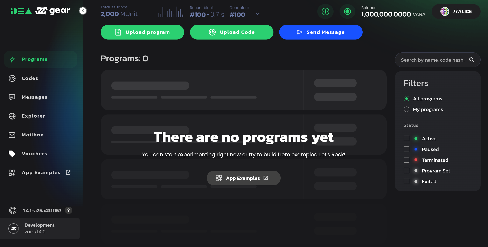
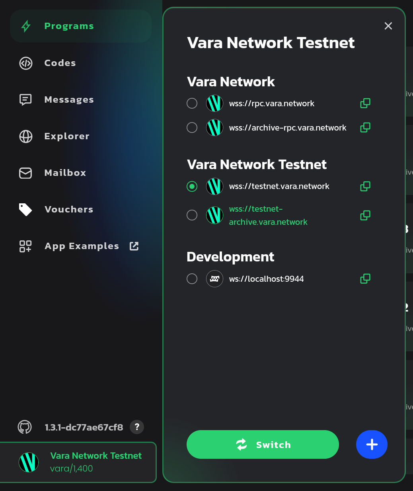
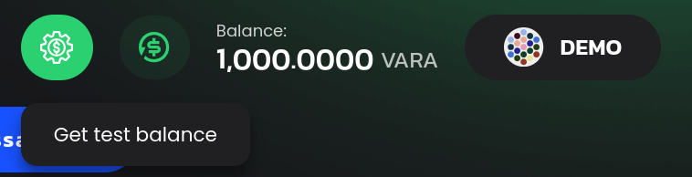

<!DOCTYPE html>
<html lang="en">

<head>
  <meta charset="utf-8" />
  <meta name="viewport" content="width=device-width, initial-scale=1.0, maximum-scale=1.0, user-scalable=no" />

  <title>Vara Network Intro, Hello World</title>
  <link rel="icon" href="./../../assets/favicon.svg" />
  <link rel="shortcut icon" href="./../../assets/favicon.png" />
  <link rel="stylesheet" href="./../../dist/reset.css" />
  <link rel="stylesheet" href="./../../dist/reveal.css" />
  <link rel="stylesheet" href="./../.././assets/styles/PBA-theme.css" id="theme" />
  <link rel="stylesheet" href="./../../css/highlight/shades-of-purple.css" />

  <link rel="stylesheet" href="./../.././assets/styles/custom-classes.css" />

</head>

<body class="site">
  <header class="site-header">
    <!-- This logo is a link only on the watching server, not the production build -->
    <a href="">
      
    </a>
  </header>
  <main class="reveal">
    <article class="slides">
      <section  data-markdown><script type="text/template">

# 开发环境搭建
</script></section><section  data-markdown><script type="text/template">
## Checklist

- `wasm-opt` - https://github.com/WebAssembly/binaryen
- `rustup` - https://rustup.rs
- `gear` - https://get.gear.rs

<br/>


</script></section><section  data-markdown><script type="text/template">
## Gear CLI

```
$ gear --help
Usage: gear [OPTIONS]
       gear <COMMAND>

Commands:
  key            Key management cli utilities
  build-spec     Build a chain specification
  check-block    Validate blocks
  export-blocks  Export blocks
  export-state   Export the state of a given block into a chain spec
  import-blocks  Import blocks
  purge-chain    Remove the whole chain
  revert         Revert the chain to a previous state
  try-runtime    Try-runtime has migrated to a standalone CLI (<https://github.com/paritytech/try-runtime-cli>). The subcommand exists as a stub and deprecation notice. It will be removed entirely some time after January 2024
  chain-info     Db meta columns information
  gcli           Run gear program cli.
  help           Print this message or the help of the given subcommand(s)
```
</script></section><section  data-markdown><script type="text/template">
## 使用示例

```shell
# Vara Network Testnet
$ gear
```

<br/>

```shell
# Vara Network Mainnet
$ gear --chain vara
```

<br/>

```shell
# 生成地址
$ gear key generate
```

<br/>

```shell
# 检查地址
$ gear key inspect
```
</script></section><section  data-markdown><script type="text/template">
## 编译模板合约

<pba-flex>

```shell
$ gear gcli new hello-world && cd hello-world
Initialized empty Git repository in /root/hello-world/.git/
Successfully created hello-world!
```

<br/>

```shell
$ cargo build --release
   Compiling template v0.1.0 (/root/hello-world)
    Finished `release` profile [optimized] target(s) in 1.29s
```
<!-- .element: class="fragment" data-fragment-index="1" -->

<br/>

<div>

```shell
$ ls -1 target/wasm32-unknown-unknown/release/
template.meta.txt
template.opt.wasm
template.wasm
```

<br/>

得到 Metadata 与 (`*.meta.txt`) 与优化后的合约二进制 (`*.opt.wasm`)

</div>

<!-- .element: class="fragment" data-fragment-index="2" -->

</pba-flex>
</script></section><section  data-markdown><script type="text/template">
## 启动本地节点

```shell
$ gear --dev --rpc-port 9944
2024-06-04 07:51:04 Gear Node    
2024-06-04 07:51:04 ✌️  version 1.4.1-a25a431f157    
2024-06-04 07:51:04 ❤️  by Gear Technologies, 2021-2024    
2024-06-04 07:51:04 📋 Chain specification: Development    
2024-06-04 07:51:04 🏷  Node name: brave-cattle-3351    
2024-06-04 07:51:04 👤 Role: AUTHORITY    
2024-06-04 07:51:04 💾 Database: RocksDb at /tmp/substrate0tBDvz/chains/vara_dev/db/full
...
```

<br/>

RPC: ws://localhost:9944
</script></section><section  data-markdown><script type="text/template">
## 连接 RPC 节点



<br/>

https://idea.gear-tech.io/programs?node=ws://localhost:9944
</script></section><section  data-markdown><script type="text/template">
<pba-flex>
<pba-cols>

<pba-col>

## 使用公共测试网



</pba-col>

<pba-col>
        
## 获取测试代币



</pba-col>
<!-- .element: class="fragment" data-fragment-index="1" -->

</pba-cols>
</pba-flex></script></section>
    </article>
  </main>

  <script src="./../../dist/reveal.js"></script>

  <script src="./../../plugin/markdown/markdown.js"></script>
  <script src="./../../plugin/highlight/highlight.js"></script>
  <script src="./../../plugin/zoom/zoom.js"></script>
  <script src="./../../plugin/notes/notes.js"></script>
  <script src="./../../plugin/math/math.js"></script>

  <script src="./../../assets/plugin/mermaid.js"></script>
  <script src="./../../assets/plugin/mermaid-theme.js"></script>

  <script src="./../../assets/plugin/chart/chart.js"></script>
  <script src="./../../assets/plugin/chart/chart.min.js"></script>

  <script src="./../../assets/plugin/tailwindcss.min.js"></script>

  <script>
    function extend() {
      var target = {};
      for (var i = 0; i < arguments.length; i++) {
        var source = arguments[i];
        for (var key in source) {
          if (source.hasOwnProperty(key)) {
            target[key] = source[key];
          }
        }
      }
      return target;
    }

    // default options to init reveal.js
    var defaultOptions = {
      controls: true,
      progress: true,
      history: true,
      center: true,
      transition: 'default', // none/fade/slide/convex/concave/zoom
      slideNumber: true,
      mermaid: {
        startOnLoad: false,
        logLevel: 3,
        theme: 'base',
        themeVariables: {
          primaryColor: purple,
          primaryTextColor: white,
          primaryBorderColor: pink,
          lineColor: pink,
          secondaryColor: lightPurple,
          tertiaryColor: lightPurple,
        },
      },
      chart: {
        defaults: {
          color: 'lightgray', // color of labels
          scale: {
            beginAtZero: true,
            ticks: { stepSize: 1 },
            grid: { color: "lightgray" }, // color of grid lines
          },
        },
        line: { borderColor: ["#ccc", "#E6007A", "#6D3AEE"], "borderDash": [[5, 10], [0, 0]] },
        bar: { backgroundColor: ["#ccc", "#E6007A", "#6D3AEE"] },
      },
      plugins: [
        RevealMarkdown,
        RevealHighlight,
        RevealZoom,
        RevealNotes,
        RevealMath,
        RevealMermaid,
        RevealChart
      ]
    };

    // options from URL query string
    var queryOptions = Reveal().getQueryHash() || {};

    var options = extend(defaultOptions, {"width":1500,"height":900,"margin":0,"minScale":0.2,"maxScale":2,"transition":"none","controls":false,"progress":true,"center":true,"slideNumber":false,"backgroundTransition":"fade"}, queryOptions);
  </script>


  <script>
    Reveal.initialize(options);
  </script>
</body>

</html>
